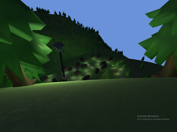
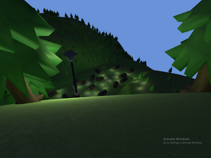
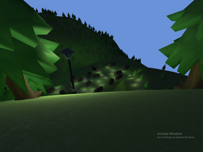

Mountain Tales
 

Adventure game set in vast mountains and mystical villages. Explore legends and epic stories while interacting with a living world. Every peak holds a secret, and every village tells a story.
← Back to Games

Adventure game set in vast mountains and mystical villages. Explore legends and epic stories while interacting with a living world. Every peak holds a secret, and every village tells a story.
← Back to Games